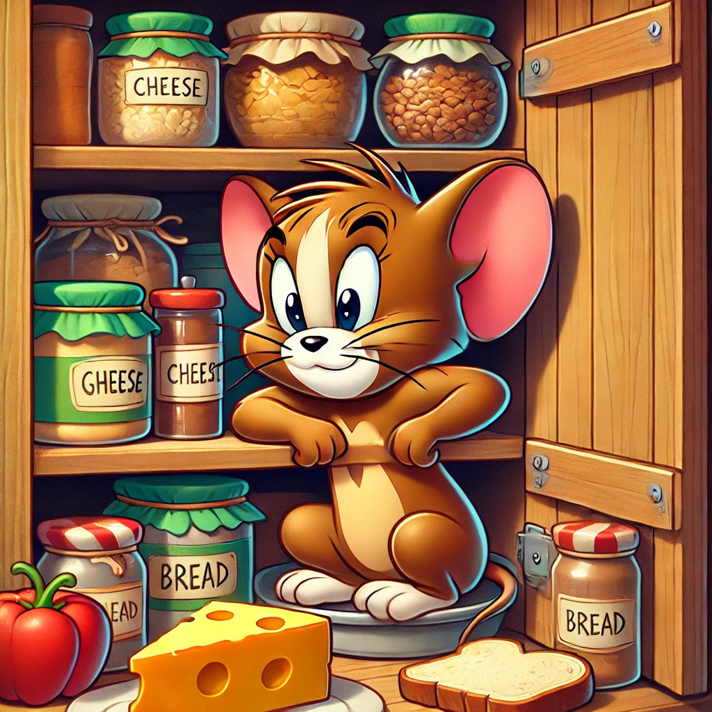
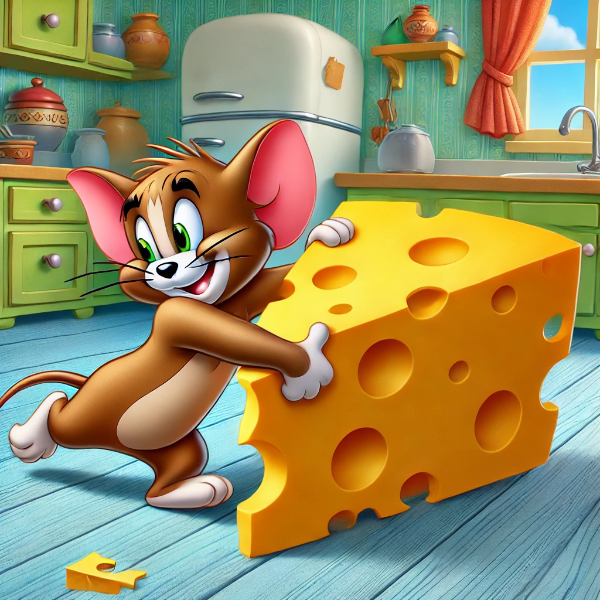
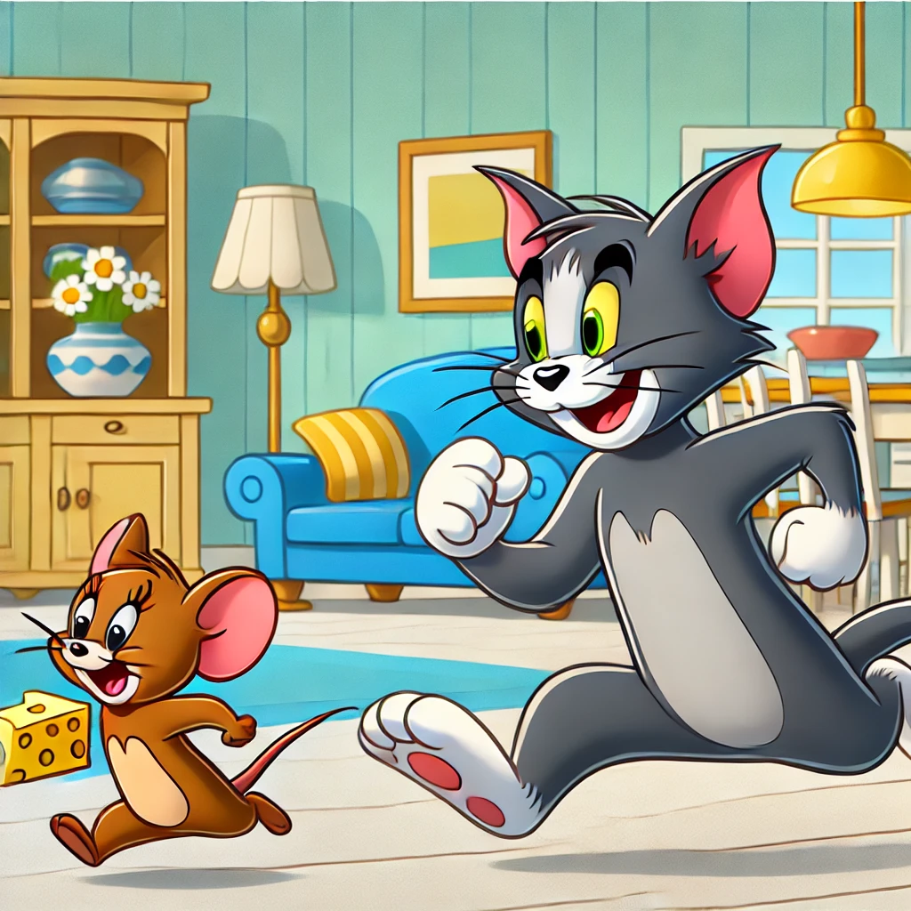
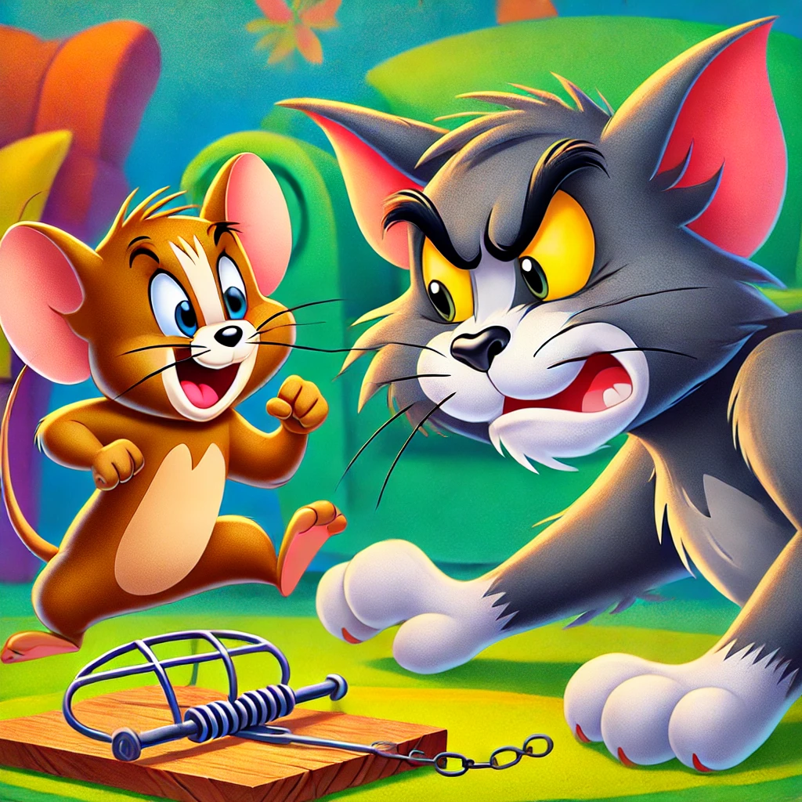

Kedysi dávno v útulnom dome žila šťastná rodina, v ktorej bol Tom, lenivý, ale ambiciózny kocúr, miláčikom domácich. Vždy sa považoval za pána domu.

Ale jedného dňa sa v komore objavila malá, no mimoriadne prefíkaná myška Jerry, ktorá si povedala, že dom je ideálne miesto pre jej nové útočisko.

Spočiatku Jerry jedol iba omrvinky a ukrýval sa vo svojej nore. No postupom času mu narástla chuť a začal kradnúť jedlo priamo zo stola.

Tom, cítiac ohrozenie svojho statusu obľúbenca, sa rozhodol Jerryho chytiť, aby si znovu získal rešpekt domácich.

Jerry sa však ukázal nielen ako šikovný, ale aj ako skutočný majster trikov! Namiesto úteku začal vymýšľať prešibané pasce, čím premenil dom na bojisko nekonečného súboja.
Teraz nie sú Tom a Jerry iba kocúr a myš. Sú to rivali, ktorí neustále súperia o nadvládu v dome.
Tom má všetko: šikovnosť, silu a plnú krabicu trikov.
Ale Jerry má rozum, prefíkanosť a obrovskú vôľu dokázať, že aj ten najmenší môže byť najsilnejší.
Ovládanie hry:
Po stlačení tlačidla "Pause" sa zobrazia tlačidlá na návrat na domovskú stránku a pohyb po úrovniach.
←→ - Pohyb do strán
AD - Pohyb do strán
PC - Pauza a pokračovanie v hre
Space- Streľba
Ty si Tom, múdry a šikovný kocúr, ktorému už lezie na nervy chaos, ktorý v dome spôsobuje Jerry. Toto je boj o kontrolu nad domom a musíš dokázať, že si skutočný pán domu. Ukáž, kto je tu šéf!